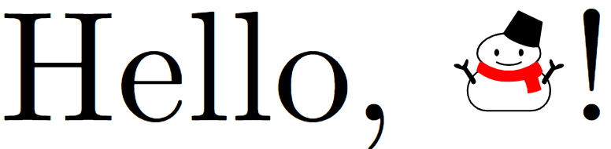

取り敢えず雪だるま☃してみる
2024/07/20
雪だるまの歴史
雪だるま☃する前に, まず, Unicodeの雪だるまの歴史を遡る必要がある. Unicode 5.1 以前は, 雪だるまは U+2603 SNOWMAN のみであったが, Unicode 5.2 で U+26C4 SNOWMAN WITHOUT SNOW と U+26C7 BLACK SNOWMAN が追加された. Unicode 5.1 以前の例示字形では U+2603 において背景に雪が降っていたが, 前述により Unicode 5.2 以降の例示字形では, U+2603 は雪だるま(白)+降雪, U+26C4 は雪だるま(白)のみ, U+26C7 は黒い雪だるま+降雪, というデザインとなった (雪だるま3兄弟の誕生!). なお, 雪だるまグリフのデザインはフォントによって多種多様であり, U+2603 でも雪が降ったり降らなかったり, 表情が異なったりする. 様々なフォントにおける雪だるまグリフのデザインについては, TeX Alchemist Online の記事が参考になる.
さて, ここまでの説明で分かるように, 使用するフォントによって雪だるまが異なってしまうという大問題が発生する. これは, LaTeXにおいても同様であり, この問題に対して様々な議論がなされた1. そこで作られたのが, scsnowman パッケージである. パッケージの使い方は, 作者である aminophen さんの記事を参照されたい.
Hello, ☃!
まず, Hello, World! ならぬ Hello, ☃! をする. scsnowman パッケージで雪だるまを表示するには, 以下のように記述する.\documentclass{standalone}
\usepackage{scsnowman}
\begin{document}
Hello, \scsnowman[hat=true,muffler=red,arms=true]!
\end{document}
上記により, 以下のような出力を得る.

無事に Hello 出来た☃.
1. 諸説あり.